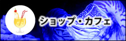
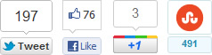

九州福岡県福岡市にある水族館。ペンギン、アシカ、イルカショーを始め、様々なイベントを随時開催しています。
修繕に伴い、アシカパフォーマンスステージ周りのスタンドの一部をクローズいたします。
2月・3月の営業時間延長のご案内
水族館混雑状況をツイッターで公開中!
2月・3月の営業時間延長のご案内
水族館混雑状況をツイッターで公開中!
12/01/16～12/03/07
受験生応援 サンシャイン水族館で「合格祈願」
12/02/03～12/03/14
ホワイトデーイベント～Love Wish～
12/03/03～12/03/05
サンゴの日記念 沖縄まつり
12/03/03～12/04/08
輪るピングドラム×サンシャイン水族館 コラボイベント!
12/03/03～12/04/08
輪るピングドラム×サンシャイン水族館 コラボイベント!


(c) 2012 Aquarium Andante. All rights reserved. Theme Design by Mah from
b-cures